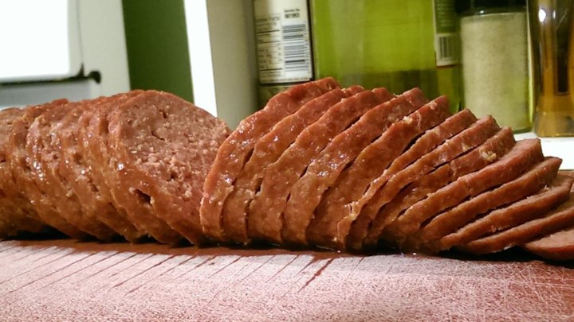

Bologna

Description
This is a recipe for making Bologna,a dish that is made mostly of meat
It is usually served as a combination of different dishes and/or menu
Ingredients
- Ground Beef
- Garlic powder
- Onion powder
- Liquid smoke flavoring
- Salt
Steps
- Mix groud beef with salt, garlic powder, onion powder and liquid smoke
- Divide in half and form into two rolls
- Wrap with a plastic wrap
- Pre heat the oven
- Add the mixture to the oven for 15 minutes